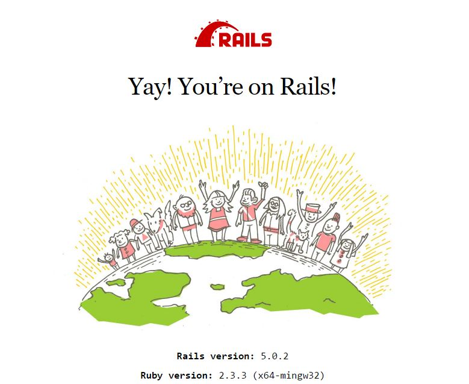

Toggle navigation
Home
Aula 1 - Configuração
Aula
2
O Framework
Aula 3 - Scaffold
Aula 4 - Models
Aula 5 - Controllers e Views
O QUE É RAILS?
Convention Over Configuration
"Rails is the killer app for Ruby." - Matz
Don't Repeat Yourself
FIM!
